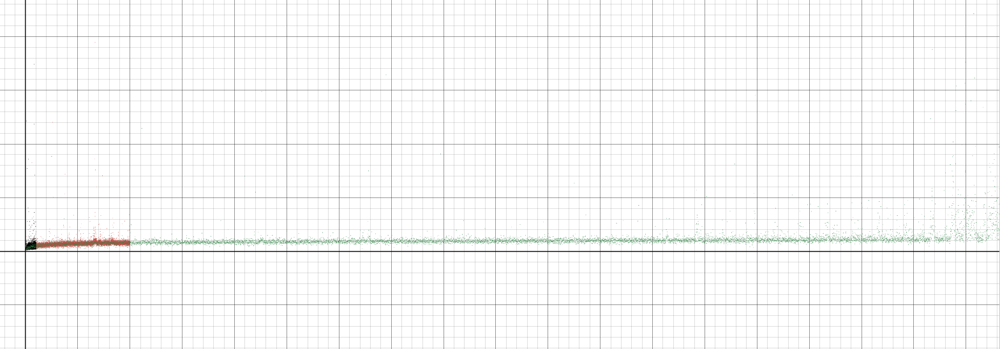
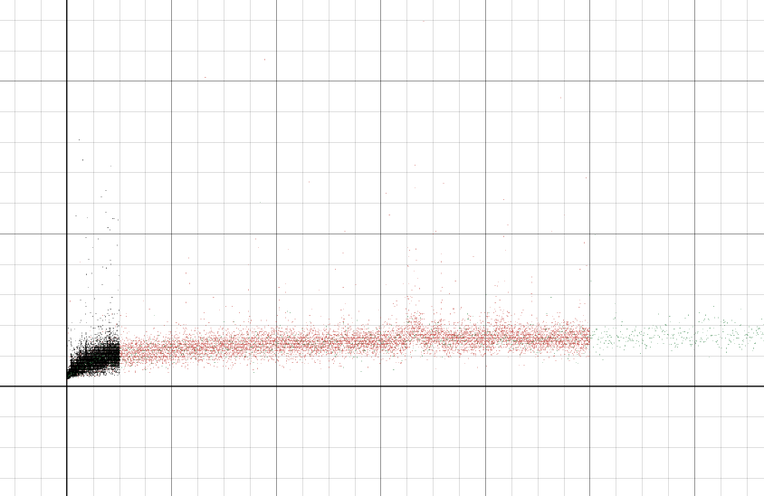
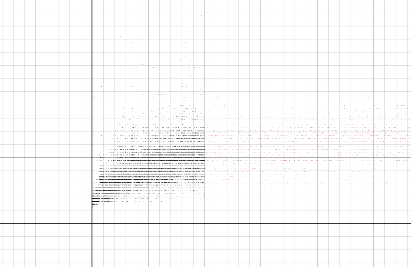
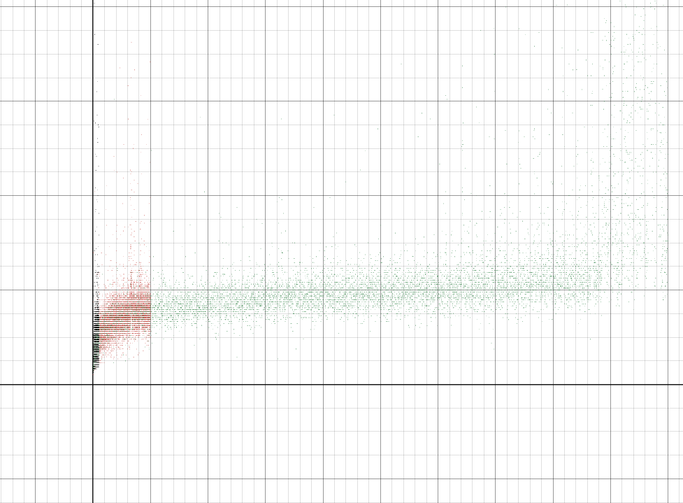

From Theory to Evidence
As comfortable as we might be storing data in vectors or linked lists, we have learned that those structures can be inefficient for search and dynamic management. The C++ standard library addresses this with additional containers that carry different performance guarantees.
One of these is std::set — an ordered container that does not allow
duplicates. It supports insert(), erase(), and
find(), works with familiar iterator idioms (begin(),
end(), range-based for), and the C++ standard mandates that these
operations run in O(log n) time. Most mainstream C++ standard library
implementations use a red-black tree, a self-balancing BST variant.
The Challenge
Can we observe behavior that is consistent with the
O(log n) time guarantee? Let’s run an experiment: time the insertion of
individual elements into a std::set as the set grows, and plot
runtime against N.
Try It Yourself First
Time and interest permitting, give this a shot in our course Codespace playground before revealing the code and plots below.
FYI: the example below outputs CSV data to the terminal and to a file, and uses Desmos to visualize the results.
The Experiment
Show the timing code
#include <chrono>
#include <iomanip>
#include <iostream>
#include <fstream>
#include <random>
#include <set>
int main()
{
std::random_device rd;
std::mt19937 gen(rd());
std::uniform_int_distribution<long> dis(
std::numeric_limits<long>::min(),
std::numeric_limits<long>::max()
);
std::set<long> experiment_set;
const std::string FILENAME = "set_complexity_results.csv";
std::ofstream file(FILENAME, std::ios::app);
if (!file.is_open())
{
std::cerr << "Unable to open file: " << FILENAME << std::endl;
}
const long STOP = 100000;
const long STEP = STOP / 10000;
for (long n = 0; n < STOP; ++n)
{
long random_number = dis(gen);
auto start_time = std::chrono::high_resolution_clock::now();
experiment_set.insert(random_number);
auto end_time = std::chrono::high_resolution_clock::now();
std::chrono::duration<double> duration = end_time - start_time;
if (n % STEP == 0)
{
std::cout << n << ", "
<< std::fixed
<< std::setprecision(15)
<< duration.count()
<< std::endl;
file << n << ", "
<< std::fixed
<< std::setprecision(15)
<< duration.count()
<< std::endl;
}
}
}
This version of the program inserts 100,000 random long values into a
std::set, timing each individual insertion. Every 10 insertions
it logs N and the insertion time to both stdout and a CSV file for plotting,
producing 10,000 data points in total, and, of course, these values are configurable.
Show the plots
Here are four views of the same data. Can you reproduce these? Note that the axes and scales are intentionally left unlabeled!




What the Data Shows
The plots are consistent with what the standard guarantees: insertion into
std::set has logarithmic complexity in N. As the set doubles in size,
the average insertion cost increases by only a small constant amount, the
hallmark of O(log n) behavior.
Notice also the absolute scale of the y-axis. Individual insertions are extremely fast in practice, even as N reaches 100,000. This is why logarithmic complexity is so valuable for dynamic data: the performance degrades so slowly that even very large collections remain responsive.